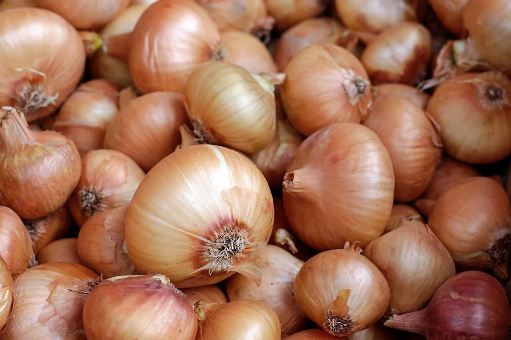
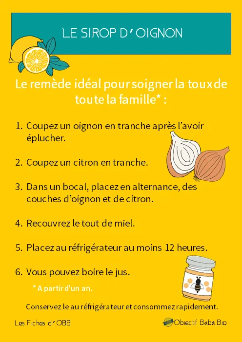

Élixirs naturels · 4 min de lecture
Élixir d’oignon revitalisant : Élixir naturel pour renforcer l’immunité, purifier l’organisme et soutenir les voies respiratoires

Introduction
L’oignon est l’un des remèdes les plus anciens de la médecine populaire. Présent dans presque toutes les cultures, il a longtemps été considéré comme un aliment-médecine, capable de protéger le corps contre les infections, les refroidissements et l’épuisement général.
Souvent relégué au simple rôle d’ingrédient culinaire, l’oignon révèle pourtant une puissance remarquable lorsqu’il est préparé sous forme d’élixir. Cet élixir d’oignon n’est pas là pour masquer les symptômes, mais pour soutenir les fonctions naturelles du corps, renforcer l’immunité et favoriser une détoxification douce.
Problème
Fatigue chronique, système immunitaire affaibli, rhumes à répétition, toux persistante, digestion lourde…
Notre organisme est constamment sollicité par le stress, la pollution, une alimentation trop transformée et un rythme de vie déséquilibré.
Résultat : le corps s’encrasse, s’épuise et perd peu à peu sa capacité naturelle à se défendre.
Promesse
Cet élixir d’oignon agit comme un soutien profond et naturel :
il aide le corps à éliminer, à se défendre et à retrouver un terrain plus sain, sans agresser l’organisme.
Bénéfice
✔ Renforce les défenses naturelles
✔ Soutient les voies respiratoires
✔ Favorise une meilleure circulation
✔ Aide à la digestion et à l’élimination
✔ Apporte une sensation de chaleur et de vitalité
Pourquoi ce remède est efficace
L’oignon est riche en composés soufrés, en flavonoïdes (dont la quercétine) et en antioxydants puissants. Ces substances naturelles ont une action reconnue sur :
la lutte contre les agents pathogènes,
la réduction de l’inflammation,
la stimulation du système immunitaire,
la fluidification des sécrétions bronchiques.
Associé à d’autres ingrédients soigneusement choisis, l’oignon devient le cœur d’une alchimie thérapeutique douce mais profonde, respectueuse du corps.
Les bienfaits
🌿 Pour le système immunitaire
L’oignon stimule les défenses naturelles et aide l’organisme à mieux résister aux infections saisonnières.
🌿 Pour les voies respiratoires
Il est traditionnellement utilisé pour calmer la toux, dégager les bronches et soutenir les poumons.
🌿 Pour la digestion
Il favorise la production de sucs digestifs et aide à réduire les ballonnements.
🌿 Pour la circulation
Ses composés soufrés soutiennent la fluidité sanguine et la vitalité cardiovasculaire.

La recette
🧪 Ingrédients (choisis pour une alchimie optimale)
1 gros oignon rouge bio (plus riche en antioxydants)
2 cuillères à soupe de miel brut (de préférence local)
1 petit morceau de gingembre frais (stimulant et réchauffant)
1 cuillère à soupe de vinaigre de cidre non pasteurisé
250 ml d’eau de source ou filtrée
👉 Chaque ingrédient joue un rôle précis :
l’oignon nettoie et protège,
le miel apaise et nourrit,
le gingembre active la circulation,
le vinaigre soutient l’assimilation.
🔪 Préparation
Épluche l’oignon et coupe-le finement.
Râpe le gingembre.
Place le tout dans un bocal en verre.
Ajoute le miel et le vinaigre de cidre.
Verse l’eau tiède (jamais bouillante).
Mélange, couvre et laisse macérer 12 à 24 heures à température ambiante.
Filtre si tu le souhaites, ou conserve avec les morceaux pour un élixir plus puissant.
Comment l’utiliser
En prévention :
1 cuillère à soupe le matin à jeun, pendant 7 à 14 jours.En période de fatigue ou de refroidissement :
1 cuillère à soupe, 2 à 3 fois par jour.En soutien respiratoire :
Peut être pris tiède, lentement, comme un rituel apaisant.
👉 Prends le temps de respirer profondément avant et après la prise. L’intention fait partie du soin.
À qui s’adresse ce rituel
✔ Aux personnes sujettes aux rhumes fréquents
✔ À celles qui ressentent une fatigue immunitaire
✔ Aux adultes cherchant une alternative naturelle
✔ À ceux qui souhaitent renouer avec des remèdes simples et ancestraux
Ce rituel s’adresse à celles et ceux qui veulent écouter leur corps plutôt que le contraindre.
Précautions
⚠ Ne pas utiliser en cas d’allergie à l’oignon ou au miel.
⚠ Déconseillé aux personnes ayant un estomac très sensible ou des troubles gastriques sévères.
⚠ Toujours commencer par de petites doses.
👉 Ce remède ne remplace pas un avis médical en cas de pathologie grave.
Conclusion & appel à l’action
L’élixir d’oignon revitalisant n’est pas une solution miracle immédiate.
C’est un rituel de reconnexion, une manière d’envoyer un message clair à ton corps : je te soutiens, je t’écoute, je te respecte.
👉 Si la nature ne l’a pas créé, ne le buvez pas.
Si tu souhaites aller plus loin dans cette approche naturelle du bien-être, je partage régulièrement :
des élixirs ciblés,
des rituels santé simples,
des guides pratiques pour renforcer le corps et apaiser le mental.
📚 Je suis auteur bien-être sous le pseudo Chest0 JM.S., et mes ouvrages sont disponibles sur Amazon.
🔗 Retrouve tout mon univers ici :
👉 https://chest0.fr
✨ Commence aujourd’hui à nourrir ton système nerveux avec douceur, intelligence et naturel.
👉 Si tu veux aller plus loin, découvre aussi notre prochain élixir
« Travail assis : pauses actives »
👉 Créez votre planning de pauses gratuit : chest0.fr/outils/pauses-actives/
« Journal du sommeil »
👉 Tenez votre journal du sommeil sur 7 jours, gratuitement : chest0.fr/outils/journal-sommeil/
« Les 20 aliments des centenaires » et « Microbiote intestinal »
👉 Mes livres de recettes naturelles, élixirs et détox : chest0.fr/pages/livres.html
« 4 habitudes à observer au quotidien »
👉 Faites le point sur vos habitudes avec l'outil gratuit : chest0.fr/outils/equilibre-quotidien/
Plus de 40 recettes d'élixirs dans les livres Chest0.
Voir les livres